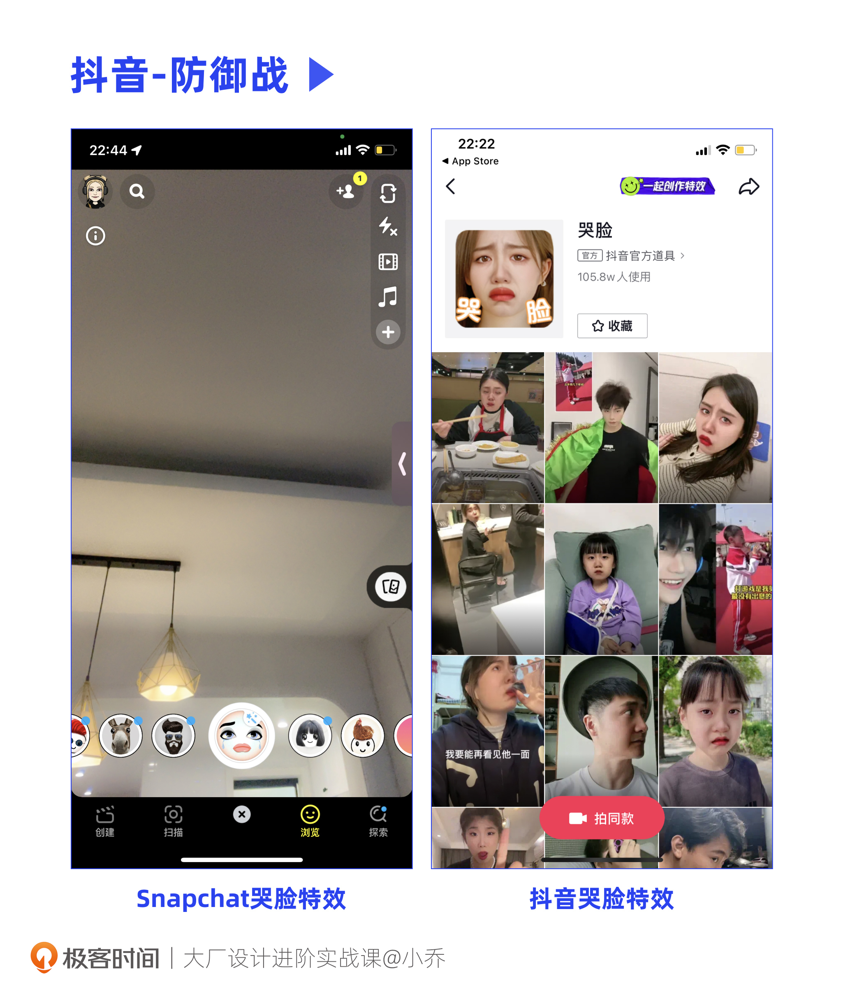

- 00 开篇词 升维思考，是设计师有效成长的第一步.md.html
- 01 业务周期：0-1-10-100-N的发展策略.md.html
- 02 商战模式：如何在商业竞争下突出重围？.md.html
- 03 市场洞察：如何找寻差异化撬动支点？.md.html
- 04 用户洞察：不懂用研的设计师不是好职场人.md.html
- 05 用户画像：是形式主义还是真的有效？.md.html
- 06 用户旅程：挖掘不同用户的核心机会点.md.html
- 07 职场晋升：看懂晋升的“游戏规则”.md.html
- 08 设计价值升级：五层进阶突破成长.md.html
- 09 基础价值 核心三原力：如何将需求转化为设计稿？.md.html
- 10 基础价值 第一性原理：从问题本质解决问题.md.html
- 11 基础价值 设计复盘：只是量化设计结果吗？.md.html
- 12 二级价值 负向网兜：如何全面发现负向问题？.md.html
- 13 二级价值 设计自驱：如何做好项目Owner？.md.html
- 14 二级价值 自驱合作：如何反内卷处理合作关系？.md.html
- 15 三级价值 增长误区：思维惯性陷阱和虚荣数据.md.html
- 16 三级价值 用户增长历程：AARRR是万能的吗？.md.html
- 17 三级价值 产品增长：如何做好产品创新？.md.html
- 18 三级价值 运营增长：如何自驱营销活动和投放？.md.html
- 19 三级价值 品牌增长 抢占心智，赢得人心红利.md.html
- 20 三级价值 增长实操：如何“步步为营”推动落地？.md.html
- 21 四级价值 L型赋能：让T型人才发挥更大价值.md.html
- 22 四级价值 “网状对比”解决共性痛点.md.html
- 23 五级价值 商业画布：设计师可以担任业务方吗？.md.html
- 24 五级价值 共创洞察：如何做好一次完善的workshop？.md.html
- 25 五级价值 领导力觉醒：写给新晋管理者.md.html
- 26 工作选择（上）：2B or 2C设计师？如何规划领域？.md.html
- 27 工作选择（下）：大厂 or 小厂？如何选择赛道？.md.html
- 28 人才地图：认知自我，成为高潜力人才.md.html
- 29 成长历程：如何从设计小白成长为团队负责人？.md.html
- 30 冰山模型：如何成为让面试官欣赏的“面霸”？.md.html
- 31 作品集指导：什么是面试官喜欢的作品集？.md.html
- 用户故事 什么是职场设计师进阶的正确姿势？.md.html
- 结束语 突破自我，成人达己.md.html
- 捐赠
02 商战模式：如何在商业竞争下突出重围？
你好，我是小乔。
在上节课，我们一起探讨了业务全周期的四个阶段，了解了在不同阶段的业务目标和设计师发力重点。无论业务处于哪个阶段，若要在商业环境中突围，其本质逻辑都是洞察机会点，做出差异化创新。
想要合理地创新，就需要具备设计策略思维，找准差异化机会点。在这个过程中，你可能会有以下困惑：
- 我画的界面，已经“借鉴”市面上最好的竞品了，为什么它火我不火呢？
- 业内都在说设计师要有“设计策略”和“商业sense”，那什么是设计策略思维呢？
如果你也有以上疑问，说明我们对于设计师的理解还停留在视觉表达层面，还没有真正理解业务，也不清楚怎样可以提升自己的设计价值。但往往决定我们薪资和职场阶段的并不是设计技法，而是认知和信息差。
设计策略，是指我们产出设计稿的完整推导逻辑链，在充分理解商业和用户后，根据业务目标拆分成设计目标，通过设计表达来解决问题，并根据上线结果不断优化的能力。
而制定设计策略的前提，是了解商业和用户洞察方法。接下来，让我们继续探讨商业的基础知识，观察各企业、各产品是如何通过差异化机会点，成为了商业竞争中的佼佼者的。
商战有哪些类型？
从商业的高度去观察，无论我们的业务在行业内是先驱者，还是后来者居上，只要方向成立，用户活跃度逐渐提升，就会有越来越多的竞争对手加入战斗，分食市场蛋糕。
能让我们的业务活下去的方法，就是建立壁垒，与对手形成差异化竞争力。在《商战》一书中，作者提到了4种商战方式：防御战、进攻战、侧翼战和游击战。
这节课，我们就以这4种商战方式为基础，一起探讨根据不同的企业实力、业务加入时机和市场地位，业务分别应当采用哪种方式取得商战的胜利，而我们设计师，又该如何以设计推动业务，突出重围。
第1种：防御战
防御战适合成功存活下来的行业先驱者，通常这些先驱者已经是行业巨头。
什么是行业巨头呢？除了名列前茅的市场占有率和用户活跃度以外，最容易帮助我们判断的就是第一提及率。比如提到国内的IM产品，大家首先想到的就是微信，提到海外的IM产品，拥有第一提及率的就是WhatsApp。作为行业巨头，应该如何开展防御策略呢？
业务策略
对于行业巨头来说，业务策略的主要目标是抵抗其他竞争对手分割市场占有率。充分做好防御，也就是不断地补足自身弱点，同时不断超越自我，保持革新。
首先，密切观察竞品动向是十分重要的。当用户对竞争对手做出的创新有正向反馈时，作为防御的一方，就要补齐这个功能或服务，让竞争者失去优势。
这就是为什么我们会感觉到许多同行之间在互相“抄袭”，其实就是在不断拉齐功能，防御竞品的进攻。比如抖音和快手、饿了么和美团，还有近几年风生水起的各大电动汽车品牌。
除了在原本产品上进行迭代以外，推出兄弟App覆盖不同的用户群体，和已有产品形成矩阵，也是一种防御和革新。
我们可以看一看微信的推出过程。在PC互联网时代向移动互联网时代变革的过程中，出现了许多以流量替代昂贵话费的IM产品。比如中国移动在2007年推出了“飞信”，雷军在小米的MIUI中研发了“米聊”。只是飞信受限于中国移动的用户，米聊受限于小米手机的用户。
面对这种变革，QQ也推出了手机端App，但QQ毕竟是PC时代的产物，臃肿的功能难以适应移动互联网。另一方面，QQ的功能丰富好玩，但并不简洁，更适合年轻人，而当时的市场需要一个普适全民的简约IM产品，于是就诞生了微信。腾讯在已经有了QQ之后，依然紧急推出微信，形成产品矩阵，就是在超越自我，完成防御和革新。
设计重点
此时，对我们设计师来说，就要时刻保持对竞品的敏感度，并持续思考我们的业务该如何创新突破。
当我们发现用户对于进攻者的产品反应强烈时，要思考竞品的功能和风格是否适合我们的业务。如果同样适用，那就需要尽快补齐，让进攻者的差异化没有时间展现。
在2022年5月，一个哭脸特效在小红书和抖音上迅速走红，随之而来的就是一个社交产品进入了国内用户的视线，它就是海外知名的Snapchat。对于做出海业务的设计师来说，Snapchat并不陌生，但对于国内大部分用户来说，它还是一个全新的社交软件。
Snapchat经过这一特效的发酵，迅速成为App Store下载排行榜第一名。面对Snapchat在国内的突然兴起，抖音设计师也迅速响应，在一周内推出自己的哭脸特效，成功抵御了其他产品的进攻。

行业巨头通过自我革新和补足弱点，可以有效开展防御战，但也只有行业巨头才有资格打防御战。接下来我们看看，当我们不是行业巨头时可以怎么做。
第2种：进攻战
在市场中处于第二梯队的企业或业务，适合打进攻战。通常，当自己所处的行业中已经有一个标杆产品时，就需要集中力量向这个巨头发起进攻。
业务策略
进攻战的核心要领，就是找寻行业巨头的弱点，尤其当这个弱点是对方难以攻克的困难时，往往就是我们铸造护城河的机会。
以沃尔沃为例，它在高端车里并不算是第一品牌，但为了进攻最为TOP的几家汽车品牌，沃尔沃将每一款车都做到了安全优先。
业内的其他豪车品牌，通常需要用户购买更高的装配方案或购买更贵的车型，来提升安全配置。而这对于沃尔沃和广大用户来说，就是一种弱点——许多东西都有档次，但人的生命是不分等级的。沃尔沃抓住这一弱点，集中资源主打安全，从20W到90W的车款，安全配置是一模一样的，都可以确保安全系数。
设计重点
对于我们设计师来说，抓住巨头在产品功能、品牌调性等方面的弱点，做出更受用户欢迎的设计，这个道理是相通的。
假设市面上最受欢迎的饮料是可口可乐，而我们是百事可乐的设计师，可口可乐的销量是我们公司的5倍。此时，面对市场占有率第一的可口可乐，你会怎么进攻呢？如果只专注于打价格战，百事可乐必然打不赢，毕竟可口可乐有更大的销量，他们在控制成本上更有优势。
这就是百事可乐成功进攻可口可乐的经典案例。可口可乐在当时已经是一个知名大企业，包装是引以为荣的流线玻璃瓶，已生产了5000万个，并投入了大量广告费用，在用户心里树立印象。换个角度思考，这就会导致现有的包装和用户印象都较难被改变。
百事可乐从包装入手，向市场推出了两倍容量的新型包装，但售价和可口可乐保持一致。虽然本质还是价格上的竞争，但通过外形包装的加持，让这场进攻战更加稳妥地取得了成功。虽然后来可口可乐也紧急推出了大瓶装，但这个短期的优势已经将百事可乐与对手的销量差异从5倍缩小到2.5倍。
第3种：侧翼战
如果我们既不是行业巨头，也不是第二梯队的产品，就可以通过侧翼战突出重围。
侧翼战的意思，是指发动奇袭，以突如其来的小规模战役侵占对方的一块市场。当行业的巨头们和第二梯队的竞争者们忙着防御和进攻，行业内靠后一些的企业就可以发动侧翼战，获得一席之地。
业务策略
通常发动侧翼战的企业，主攻的重点是巨头们没有核心去经营的方面。打侧翼战，要在这个领域中找到一个小阵地，做到不可替代。
比如，大部分洗发水都在主打去屑，这是更为普遍的用户需求，但我们可以主打防脱发，虽然用户群体不是全量用户，但也有一定覆盖面。lululemon在和Nike抢占市场时，就将瑜伽裤做成了可以外穿的时尚单品。
设计重点
对于我们设计师来说，不管是推动产品功能、营销活动，还是向用户传达品牌价值，都要围绕核心差异化的定位来设计。侧翼战的核心在于抢夺心智，让用户一想到某个优点就想到我们的产品。
以江小白为例，当其他知名的白酒品牌主打的都是香醇、古法酿造、不可多得等定位时，江小白选择了轻松有趣、触手可及的定位，抢占了年轻快乐的心智。可以说，从品牌概念、包装、需求、定价、饮用场景上，江小白都受到了年轻用户的青睐，当朋友聚会时，就会第一时间想到江小白。
江小白在包装上采用故事梗，被誉为包装界的段子手，也融合了年轻人喜欢的星座元素。就连不同的水果口味，都会使用“桃你喜欢”“葡实无华”“红红火火”“大橘为重”等创意方式命名。除了官方的设计充满趣味以外，江小白也在行业内发起过包装设计大赛，吸引了众多有创意的设计师参与，与同样有趣的灵魂形成共振。
第4种：游击战
游击战适合更小型化的企业，找到一个自己擅长的细分市场，而行业巨头不屑于进入或不擅长攻克。正因为这片领土还是净土，才使得这些企业有机会在无争地带独自美丽。
业务策略
游击战的业务重点在于“与世无争”，当全世界都在炮火纷飞中，我们可以找寻属于自己的桃花源。游击战与侧翼战的区别在于，侧翼战的企业和巨头们处于同一片战场中，只是使用的武器不一样，而游击战的企业选择了另一片净土。
我们以国内的电商平台为背景去看游击战。只要有核心竞争力，电商行业什么时候入局都不晚。当淘宝主打全面，京东主打高品质家电，拼多多主打便宜时，想要入局电商行业，就可以从细分市场切入。
得物就是以游击战的方式创业成功的。在创业初期，得物的核心品类是以鞋类为主的运动装备，且切入的核心用户也与其他国民级电商App有较大差异，是经济实力较高的年轻潮流用户，主打高净值人群。
我们来思考一个问题：如果阿里准备好好做潮流行业，那得物是否会有危机？这正是打游击战的企业最需要关注的核心问题。
如果大厂认认真真、集中力量攻克潮流行业，得物会有危机，可能无法生存。因为大船一旦集中力量往小船的方向开动，即使小船领先，大船也能在资源和能力优势上迅速超过小船。但在这个问题里，大船的方向在于做全品类平台，弱点就是不会精攻垂直领域，且用户群体差异度较大，这就给了小船在垂直领域立足的机会。
得物通过游击战成功进军市场，蓬勃发展为潮流行业独角兽。在鞋类和体育用品建立主导心智后，又趁胜追击，迅速扩充了美妆、包包、配饰、酒饮、艺术品等代表年轻新生代人群审美追求和生活方式的品类，收获了更多高潜力的高净值年轻用户。
设计重点
那么作为设计师可以如何发力呢？我们可以将业务的细分方向做到极致。比如Snapchat的核心用户为年轻人，那么产品整体调性也会体现出有趣和活力，设计师在特效滤镜、社交游戏、界面风格上都可以满足年轻化的使用需求。
我们还可以横向对比一下各电商平台做AR的思路。根据业务目标不同，各企业对于AR的使用手法也是大相径庭的。
有的App是以AR为噱头吸引流量，有的App是以精湛的科技能力宣传品牌力，还有的App是为用户解决线上难以做交易决策的痛点。
第一种，比如淘宝曾经上线过AR试妆，但色差严重，底层SDK也不理想，无法识别嘴唇和牙齿。因此，这并不能帮助用户做交易决策，它的主要目的是通过AR功能吸引流量，再分流给各个商品。这是淘宝没做好吗？并不是。高精度的模型制作和底层技术都意味着成本，这样的方式既能够达成业务目标，又能控制成本。
第二种，比如GUCCI的AR试鞋，模型精致，贴合稳定度很高，但款式很少也并不更新，其主要目的是以科技感提升品牌力。
第三种，宜家和得物的AR体验，覆盖了大量商品，AR试穿功能持续在线，也会保持更新。对这两个平台来说，退货都较为麻烦困难，AR的使用目的是为了帮助用户解决交易决策的问题。无限还原真实的AR试穿体验，成为了用户与商品的无障碍交流方式。
企业只能使用一种商战策略吗？
在了解完这四种商战类型后，你可以想一想，企业在发展过程中，只能使用一种商战策略吗？
我们对于京东最开始的印象，就是3C家电品类的电商平台。但在之后呢？平台上的品类逐渐增多，在2007-2011这四年里，京东完成了从家电到全品类的布局，从单一的B2C零售企业转向综合型零售企业，盈利模式也逐步从垂直型转向综合型——从游击战到侧翼战，再从进攻战到防御战。
因此，打游击战入局的企业并非永远只能打游击战，所有的理论知识，都要根据具体情况灵活调整。
另一方面，面对不同的市场环境，产品的发展路径也不尽相同。海外产品的形态往往较为简单垂直，而国内的App往往会向一站式平台发展，成为综合功能聚集在一起的Super App，比如支付宝、微信、美团。在市场环境允许、用户需求允许的情况下，企业的业务也会不断增加，自身实力、市场地位也会得到提升。
进一步来说，我们对于行业内的所有理论和它们的应用，都要秉持辩证的态度。因为随着时代的发展，或者行业的差异，理论也需要随之更新。这也是为什么我会在课程中讲明每个理论的优缺点与适用情况，并倾向于将自己验证过的模型和经验分享给你。
今日小结
今天，我们一起探讨了在激烈的商业竞争环境下，企业或业务想要突出重围的4种商战方式。
防御战适合行业老大哥，通过补足自身弱点，不断超越自我，来保持革新；进攻战适合第二梯队的企业，通过攻击行业巨头的弱点，形成自身优势；侧翼战适合更靠后一些的企业，虽然与行业巨头和第二梯队的企业身处同样的行业，但会挑选有差异的优势来抢占用户心智；游击战适合更小型的企业，挑选行业巨头不会主攻的细分领域，在自己的行业内做到头部。
如果某个领域有100家公司，那么至少有94家公司都需要打游击战，3家公司采用侧翼战，2家公司发动进攻战，1家公司需要不停地打防御战。
我们要根据自身业务在行业中的市场占有率和加入商战的时间，选择恰当的战略方向，根据目标方向拆解为设计师可以发力的项目，从而发挥设计价值。
相信通过这两节课的学习，你已经明白了商业知识对于提升设计价值的作用。如果说，设计师在职场中的第一次成长是软件技法，那第二次成长就在于设计策略思维。
思考你正在负责的业务，是否对业务方的规划恍然大悟了呢。下节课，我将分享适合设计师做市场分析的方法，帮助你在实际工作中运用。
互动时刻
回顾你过往负责过的业务，都是通过哪种商战模式存活下来的呢？在这个商战模式下，你都做过哪些设计项目，来帮助业务达成目标？
欢迎把你的经历和思考在留言区分享出来，与我和其他同学一起探讨。我们建立了一个读者交流群，欢迎你的加入！如果你觉得有所收获，也欢迎把文章分享给你的朋友一起学习。我们下节课见。
© 2019 - 2023 Liangliang Lee. Powered by gin and hexo-theme-book.